앵커기업 인사담당자 특강
바이오 기업은 어떤 신입을 찾는지, 채용 과정은 어떻게 진행되는지 앵커기업 인사담당자에게 직접 듣고 묻습니다.
2026 첫 출항까지 D-24
충남·경기·대구의 5개 대학과 8개 앵커기업·기관이 함께 여는 초광역 성장엔진 인재육성사업입니다. 11월 20일 1박 2일 워케이션 챌린지로 시작해 마이크로디그리, 융합전공, 채용연계까지 이어집니다.
신청 마감 11월 6일(금) 18:00 D-5
About Ultra Anchor
ULTRA는 충남·경기·대구를 잇는 초광역 연결을, ANCHOR는 지역 앵커기업과 함께 내리는 커리어의 닻을 뜻합니다. AI 기반 첨단바이오 제조 분야에서 일할 인재를 5개 대학이 함께 키웁니다.
현장에서 배웁니다
시험연구원의 GMP 품질 사례, 대학병원 AX센터의 의료기기 워크숍, AI 신약개발 기업의 실습까지. 강의실 밖 실제 현장에서 직무를 익힙니다.
지역을 넘어 연결됩니다
단국대·건양대·계명대·아주대·유한대가 교과를 함께 만들고 함께 운영합니다. 내 학교에 없는 과목과 실습실도 내 커리큘럼이 됩니다.
커리어의 닻을 내립니다
유한양행, 종근당, 에스디바이오센서 등 앵커기업이 교육 설계부터 채용연계까지 함께합니다. 지역에서 시작하는 바이오 커리어를 준비하세요.
One Team
바이오 기업은 GMP 기준에 맞는 공정 역량과 데이터·AI 활용 능력을 함께 갖춘 사람을 찾고 있습니다. 하지만 기업이 꼽는 가장 큰 어려움은 신입의 실무경험 부족입니다. 이 과정이 현장 실습과 기업 멘토링을 앞에 둔 이유입니다.
분석한 바이오헬스 분야 채용공고
레드바이오(의약·의료) 분야 채용공고, 분야 중 최다
30-Second Finder
세 가지 질문에 답하면 사업단이 정의한 5가지 인재 유형 중 나와 가까운 유형과 11.20 챌린지 추천 트랙을 알려 드립니다.
Pathway
처음부터 모든 걸 정하지 않아도 됩니다. 워케이션 챌린지로 먼저 경험해 보고, 나와 맞으면 다음 단계로 넘어가세요.
이름과 소속 대학, 관심 트랙을 남기면 참가 안내를 문자로 보내 드립니다.
충남에서 1박 2일. AI제약바이오·AI의료기기 워케이션챌린지① 중 하나를 이수합니다. 이후 ②(2학점)·③(3학점)으로 이어집니다.
인체·건강기초, 첨단바이오산업과 직무이해, 데이터·AI 활용기초 등 모든 트랙이 함께 듣는 교과입니다. 동계 계절학기 운영을 협의하고 있습니다.
6개 트랙 중 하나를 골라 공통·직무기초·직무심화 교과와 기업문제형 PBLⅠ을 이수합니다.
같은 트랙을 더 깊게 이어 가며 현장·연구연계까지 이수합니다. 먼저 이수한 학점은 누적 인정됩니다.
5개 대학 공동 석·박사과정 신설을 추진하고, 앵커기업 채용으로 연결합니다.
| 구분 | 마이크로디그리MICRO DEGREE | 부전공MINOR | 복수전공DOUBLE MAJOR |
|---|---|---|---|
| 이수 학점 | 12학점 | 21학점 | 42학점 |
| 기본 구성 | 공통 3 + 직무기초 3 + 직무심화 3 + PBLⅠ 3 | 공통 6 + 직무기초 3 + 직무심화 6 + PBLⅠ 3 + 현장·연구연계Ⅰ 3 | 공통 9 + 직무기초 9 + 직무심화 12 + PBLⅠ·Ⅱ 6 + 현장·연구연계Ⅰ·Ⅱ 6 |
| 교육 목표 | 특정 산업·직무의 기초역량과 기업문제 분석·설계 경험 | 같은 직무경로의 심화지식과 방학 집중형 현장·연구 경험 | 직무 전문성, 기업문제 검증, 취업·국내외 대학원 진학 역량 |
| 증명 방식 | 이수증·성적증명서 표기 방식 추후 안내 | 학위기 표기 방식 추후 안내 | |
| 신청 시기 | 11.20부터 · 마감 추후 안내 | 전공 신설 절차 완료 후 안내 | |
| 이런 학생에게 | 가고 싶은 직무를 빠르게 탐색하고 싶은 학생 | 현장실습·연구 경험까지 쌓고 싶은 학생 | 직무 전문성을 갖추고 취업·대학원 진학을 준비하는 학생 |
같은 트랙 안에서 단계적으로 넓혀 가며, 먼저 이수한 학점은 상위 과정에 누적 인정됩니다.
※ 교육과정은 각 참여대학별로 개설 전공명 등이 상이할 수 있습니다.
BioWorkation Challenge ①
AI제약바이오 워케이션챌린지①과 AI의료기기 워케이션챌린지① 중 하나를 이수하는 1학점 교과로, 2026-2학기에 시범 운영합니다. 앵커기업 현장에 머물며 일과 학습을 병행하고, 현직자 멘토링과 활동 산출물을 성과기반학점인정제로 평가합니다. 앵커기업 특강은 함께 듣습니다.
※ 챌린지 세부 일정은 변경될 수 있습니다.
두 트랙이 함께 듣습니다
신약개발·품질·인허가
교과: AI제약바이오워케이션챌린지① (1학점)
AI 도구로 신약 후보 물질을 탐색하는 과정을 직접 따라가 봅니다.
의약품 품질관리와 인허가의 실제 사례로 실습합니다. 시험소 견학은 방학 중 따로 진행합니다.
일부 세션은 바이오 기업 재직자가 함께 수강하며 옆자리 멘토가 되어 줍니다.
병원 AX·바이브코딩·사업화
교과: AI의료기기워케이션챌린지① (1학점)
병원 현장에서 나온 문제를 AI 코딩 도구로 바로 시제품으로 만들어 봅니다. 코딩 경험이 없어도 참여할 수 있도록 설계합니다. 노트북을 지참해 주세요.
만든 아이디어의 사업성과 특허 가능성을 현장 전문가에게 바로 피드백받습니다.
Schedule
※ 챌린지 세부 일정은 변경될 수 있습니다.
Partners
앵커기업·기관을 누르면 소개 페이지로, 대학·지자체·병원을 누르면 공식 홈페이지로 이동합니다.
단국대·건양대·계명대·아주대·유한대 5개 참여대학 재학생이면 전공·학년에 관계없이 신청할 수 있습니다.
교육과정은 비전공자도 들어올 수 있도록 설계했습니다. 공통교과 「바이오제조를위한인체·건강기초」는 비보건계열 학생을 위한 과목이고, 규제·산업지원 트랙은 경영학·법학·디자인 전공 학생도 추천 대상입니다. 트랙별 추천 전공은 교육과정 자세히 보기에서 확인하세요.
마이크로디그리(12학점) → 부전공(21학점) → 복수전공(42학점)으로 이어지는 단계형 과정입니다. 먼저 이수한 학점은 상위 과정에 누적 인정되므로 마이크로디그리로 시작해 넓혀 갈 수 있습니다. 신청 절차는 소속 대학 안내를 따릅니다.
이 페이지의 ‘챌린지 신청하기’ 버튼으로 신청합니다. 입력한 내용은 사업단 담당자만 확인하고, 참가 확정과 준비 사항은 입력한 휴대폰 번호와 이메일로 안내합니다. 학점 등록은 소속 대학 안내에 따라 따로 진행합니다.
AI첨단바이오 워케이션 챌린지 ①은 2026-2학기에 시범 운영하는 1학점 교과입니다. 소속 대학별 이수 구분은 아래 '우리 학교 안내'에서 확인하세요.
출석 인정(공결) 처리 여부는 소속 대학별로 추후 안내합니다.
5개 대학 공동교육과정의 학점교류 기준은 추후 안내합니다.
포기·변경 절차와 기한은 추후 안내합니다.
2026년 11월 20일(금)부터 21일(토)까지 충남에서 1박 2일 합숙으로 진행합니다. 세부 장소는 참가 확정 때 안내합니다.
참가비는 무료이며 숙박·식사·교통을 지원합니다.
신청할 때 AI제약바이오 트랙과 AI의료기기 트랙 중 하나를 고릅니다. 고민된다면 30초 진로 진단 결과를 참고하세요.
노트북을 지참해 주세요. 그 밖의 준비물과 세부 시간표는 참가 확정 때 안내합니다.
유한양행·종근당·에스디바이오센서·메가젠임플란트·다산제약·세신정밀 6개 앵커기업이 채용연계에 참여합니다. 인턴십, 서류 가점 같은 연계 방식은 추후 안내합니다.
엔포유대학연합기술지주회사와 연계한 창업 경로가 있습니다. 아이디어 발굴부터 시제품 실증, 법인 설립과 지식재산 보호, 투자 유치까지 단계별로 지원합니다.
5개 대학이 함께 운영하는 석·박사과정 신설을 추진하고 있습니다. 확정되면 이 페이지에서 안내합니다.
충남·경기·대구의 앵커기업 채용과 지역 정주 지원을 함께 연결합니다. 지원 내용은 추후 안내합니다.
News
모집 공고와 공지는 이곳에 올라옵니다.

신청 마감은 11월 6일(금) 18:00입니다. 참가 확정과 준비 사항은 문자와 이메일로 안내해 드립니다.
11월 6일(금) 18:00에 참가 신청을 마감했습니다. 문의는 ai.bio.engine@gmail.com로 보내 주세요.
참가 확정과 준비 사항은 입력한 휴대폰 번호와 이메일로 안내해 드립니다.
초광역 성장엔진 인재육성사업단은 워케이션 챌린지 참가 신청을 받기 위해 아래와 같이 개인정보를 수집·이용합니다.